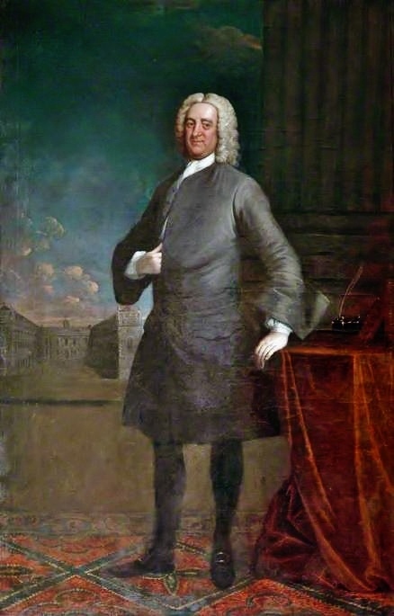

Bryan Blundell: Master Mariner, Philanthropist and Slave Trader
Bryan Blundell (c.1675–1756) was born into one of Liverpool's established maritime families at a time when the town was on the cusp of a dramatic period of growth. His life traced Liverpool's transformation from small market town to maritime powerhouse, and embodied its contradictions.

The master mariner
His father, William Blundell, was a successful merchant and shipowner, and Bryan followed naturally into the family business. He first crossed the Atlantic in 1687, at the age of twelve, as a cabin boy aboard the Amity. By his early twenties he was master of his own vessel. His sea journal, which survives in the Lancashire Archives, charts his rise from cabin boy to captain and offers a rare first-hand account of the commercial world that transformed both Liverpool and the wider Atlantic economy.
The philanthropist
Ashore, Blundell became one of Liverpool's leading citizens. With the Reverend Robert Styth he co-founded the Blue Coat School, a charity school for the town's poor children and orphans, and after Styth's death he gave up the sea to serve as its treasurer, a post he held, and funded generously from his own pocket, for the rest of his life. He served twice as Mayor of Liverpool, in 1721–22 and 1728–29, and the school he built endures to this day.
His journal also reveals the private man. Over the course of his life he lost three wives to disease, including one who died only a few months after they were married. When his eldest daughter Hannah was widowed shortly after the birth of her son in 1718, Blundell took his infant grandson into his own household and helped raise him for fourteen years. When Hannah herself died in 1731, aged just thirty-four, he wrote a moving tribute in his journal, strikingly unlike his usual business-like entries.
The slave trader
And there is a dark side to the story. From an early age Blundell was involved in the Atlantic trade, transporting sugar and tobacco produced by enslaved labour in the Caribbean. As his career progressed he moved beyond trading in slave-produced goods and became a direct investor in the transatlantic slave trade itself. In many ways his life mirrored Liverpool's own commercial evolution: from sugar, to tobacco, and ultimately to becoming Britain's leading slave-trading port. The charity and the cruelty were financed from the same ocean, and no honest account of his life can separate them. The Slave Trader confronts this legacy directly, and the moral questions it still raises about Britain's past.
A cabin boy at twelve; a master mariner; twice Mayor; a philanthropist; and a slave trader. One man, one town, one story.